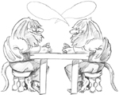
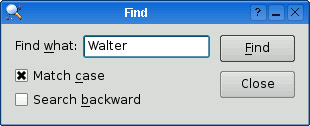
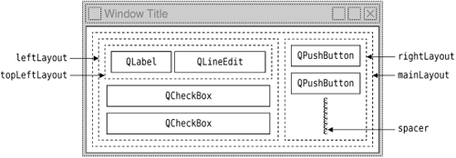
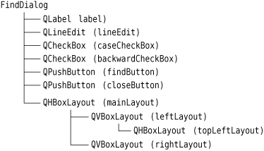

|
|

This chapter will teach you how to create dialog boxes using Qt. Dialog boxes present users with options and choices, and allow them to set the options to their preferred values and to make their choices. They are called dialog boxes, or simply "dialogs", because they provide a means by which users and applications can "talk to" each other.
Most GUI applications consist of a main window with a menu bar and toolbar, along with dozens of dialogs that complement the main window. It is also possible to create dialog applications that respond directly to the user's choices by performing the appropriate actions (e.g., a calculator application).
We will create our first dialog purely by writing code to show how it is done. Then we will see how to build dialogs using Qt Designer, Qt's visual design tool. Using Qt Designer is a lot faster than hand-coding and makes it easy to test different designs and to change designs later.
Our first example is a Find dialog written entirely in C++. It is shown in Figure 2.1. We will implement the dialog as a class in its own right. By doing so, we make it an independent, self-contained component, with its own signals and slots.

The source code is spread across two files: finddialog.h and finddialog.cpp. We will start with finddialog.h.
1 #ifndef FINDDIALOG_H 2 #define FINDDIALOG_H 3 #include <QDialog> 4 class QCheckBox; 5 class QLabel; 6 class QLineEdit; 7 class QPushButton;
Lines 1 and 2 (and 27) protect the header file against multiple inclusions.
Line 3 includes the definition of QDialog, the base class for dialogs in Qt. QDialog is derived from QWidget.
Lines 4 to 7 are forward declarations of the Qt classes that we will use to implement the dialog. A forward declaration tells the C++ compiler that a class exists, without giving all the detail that a class definition (usually located in a header file of its own) provides. We will say more about this shortly.
Next, we define FindDialog as a subclass of QDialog:
8 class FindDialog : public QDialog 9 { 10 Q_OBJECT 11 public: 12 FindDialog(QWidget *parent = 0);
The Q_OBJECT macro at the beginning of the class definition is necessary for all classes that define signals or slots.
The FindDialog constructor is typical of Qt widget classes. The parent parameter specifies the parent widget. The default is a null pointer, meaning that the dialog has no parent.
13 signals: 14 void findNext(const QString &str, Qt::CaseSensitivity cs); 15 void findPrevious(const QString &str, Qt::CaseSensitivity cs);
The signals section declares two signals that the dialog emits when the user clicks the Find button. If the Search backward option is enabled, the dialog emits findPrevious(); otherwise, it emits findNext().
The signals keyword is actually a macro. The C++ preprocessor converts it into standard C++ before the compiler sees it. Qt::CaseSensitivity is an enum type that can take the values Qt::CaseSensitive and Qt::CaseInsensitive.
16 private slots: 17 void findClicked(); 18 void enableFindButton(const QString &text); 19 private: 20 QLabel *label; 21 QLineEdit *lineEdit; 22 QCheckBox *caseCheckBox; 23 QCheckBox *backwardCheckBox; 24 QPushButton *findButton; 25 QPushButton *closeButton; 26 }; 27 #endif
In the class's private section, we declare two slots. To implement the slots, we will need to access most of the dialog's child widgets, so we keep pointers to them as well. The slots keyword is, like signals, a macro that expands into a construct that the C++ compiler can digest.
For the private variables, we used forward declarations of their classes. This was possible because they are all pointers and we don't access them in the header file, so the compiler doesn't need the full class definitions. We could have included the relevant header files (<QCheckBox>, <QLabel>, etc.), but using forward declarations when it is possible makes compiling somewhat faster.
We will now look at finddialog.cpp, which contains the implementation of the FindDialog class.
1 #include <QtGui> 2 #include "finddialog.h"
First, we include <QtGui>, a header file that contains the definition of Qt's GUI classes. Qt consists of several modules, each of which lives in its own library. The most important modules are QtCore, QtGui, QtNetwork, QtOpenGL, QtScript, QtSql, QtSvg, and QtXml. The <QtGui> header file contains the definition of all the classes that are part of the QtCore and QtGui modules. Including this header saves us the bother of including every class individually.
In finddialog.h, instead of including <QDialog> and using forward declarations for QCheckBox, QLabel, QLineEdit, and QPushButton, we could simply have included <QtGui>. However, it is generally bad style to include such a big header file from another header file, especially in larger applications.
3 FindDialog::FindDialog(QWidget *parent) 4 : QDialog(parent) 5 { 6 label = new QLabel(tr("Find &what:")); 7 lineEdit = new QLineEdit; 8 label->setBuddy(lineEdit); 9 caseCheckBox = new QCheckBox(tr("Match &case")); 10 backwardCheckBox = new QCheckBox(tr("Search &backward")); 11 findButton = new QPushButton(tr("&Find")); 12 findButton->setDefault(true); 13 findButton->setEnabled(false); 14 closeButton = new QPushButton(tr("Close"));
On line 4, we pass on the parent parameter to the base class constructor. Then we create the child widgets. The tr() function calls around the string literals mark them for translation to other languages. The function is declared in QObject and every subclass that contains the Q_OBJECT macro. It's a good habit to surround user-visible strings with tr(), even if you don't have immediate plans for translating your applications to other languages. We cover translating Qt applications in Chapter 18.
In the string literals, we use ampersands ('&') to indicate shortcut keys. For example, line 11 creates a Find button, which the user can activate by pressing Alt+F on platforms that support shortcut keys. Ampersands can also be used to control focus: On line 6 we create a label with a shortcut key (Alt+W), and on line 8 we set the label's buddy to be the line editor. A buddy is a widget that accepts the focus when the label's shortcut key is pressed. So when the user presses Alt+W (the label's shortcut), the focus goes to the line editor (the label's buddy).
On line 12, we make the Find button the dialog's default button by calling setDefault(true). The default button is the button that is pressed when the user hits Enter. On line 13, we disable the Find button. When a widget is disabled, it is usually shown grayed out and will not respond to user interaction.
15 connect(lineEdit, SIGNAL(textChanged(const QString &)), 16 this, SLOT(enableFindButton(const QString &))); 17 connect(findButton, SIGNAL(clicked()), 18 this, SLOT(findClicked())); 19 connect(closeButton, SIGNAL(clicked()), 20 this, SLOT(close()));
The private slot enableFindButton(const QString &) is called whenever the text in the line editor changes. The private slot findClicked() is called when the user clicks the Find button. The dialog closes itself when the user clicks Close. The close() slot is inherited from QWidget, and its default behavior is to hide the widget from view (without deleting it). We will look at the code for the enableFindButton() and findClicked() slots later on.
Since QObject is one of FindDialog's ancestors, we can omit the QObject:: prefix in front of the connect() calls.
21 QHBoxLayout *topLeftLayout = new QHBoxLayout; 22 topLeftLayout->addWidget(label); 23 topLeftLayout->addWidget(lineEdit); 24 QVBoxLayout *leftLayout = new QVBoxLayout; 25 leftLayout->addLayout(topLeftLayout); 26 leftLayout->addWidget(caseCheckBox); 27 leftLayout->addWidget(backwardCheckBox); 28 QVBoxLayout *rightLayout = new QVBoxLayout; 29 rightLayout->addWidget(findButton); 30 rightLayout->addWidget(closeButton); 31 rightLayout->addStretch(); 32 QHBoxLayout *mainLayout = new QHBoxLayout; 33 mainLayout->addLayout(leftLayout); 34 mainLayout->addLayout(rightLayout); 35 setLayout(mainLayout);
Next, we lay out the child widgets using layout managers. Layouts can contain both widgets and other layouts. By nesting QHBoxLayouts, QVBoxLayouts, and QGridLayouts in various combinations, it is possible to build very sophisticated dialogs.
For the Find dialog, we use two QHBoxLayouts and two QVBoxLayouts, as shown in Figure 2.2. The outer layout is the main layout; it is installed on the FindDialog on line 35 and is responsible for the dialog's entire area. The other three layouts are sub-layouts. The little "spring" at the bottom right of Figure 2.2 is a spacer item (or "stretch"). It uses up the empty space below the Find and Close buttons, ensuring that these buttons occupy the top of their layout.

One subtle aspect of the layout manager classes is that they are not widgets. Instead, they are derived from QLayout, which in turn is derived from QObject. In the figure, widgets are represented by solid outlines and layouts are represented by dashed outlines to highlight the difference between them. In a running application, layouts are invisible.
When the sublayouts are added to the parent layout (lines 25, 33, and 34), the sublayouts are automatically reparented. Then, when the main layout is installed on the dialog (line 35), it becomes a child of the dialog, and all the widgets in the layouts are reparented to become children of the dialog. The resulting parent–child hierarchy is depicted in Figure 2.3.
36 setWindowTitle(tr("Find")); 37 setFixedHeight(sizeHint().height()); 38 }

Finally, we set the title to be shown in the dialog's title bar and we set the window to have a fixed height, since there aren't any widgets in the dialog that can meaningfully occupy any extra vertical space. The QWidget::sizeHint() function returns a widget's "ideal" size.
This completes the review of FindDialog's constructor. Since we used new to create the dialog's widgets and layouts, it would seem that we need to write a destructor that calls delete on each widget and layout we created. But this isn't necessary, since Qt automatically deletes child objects when the parent is destroyed, and the child widgets and layouts are all descendants of the FindDialog.
Now we will look at the dialog's slots:
39 void FindDialog::findClicked() 40 { 41 QString text = lineEdit->text(); 42 Qt::CaseSensitivity cs = 43 caseCheckBox->isChecked() ? Qt::CaseSensitive 44 : Qt::CaseInsensitive; 45 if (backwardCheckBox->isChecked()) { 46 emit findPrevious(text, cs); 47 } else { 48 emit findNext(text, cs); 49 } 50 } 51 void FindDialog::enableFindButton(const QString &text) 52 { 53 findButton->setEnabled(!text.isEmpty()); 54 }
The findClicked() slot is called when the user clicks the Find button. It emits the findPrevious() or the findNext() signal, depending on the Search backward option. The emit keyword is specific to Qt; like other Qt extensions it is converted into standard C++ by the C++ preprocessor.
The enableFindButton() slot is called whenever the user changes the text in the line editor. It enables the button if there is some text in the editor, and disables it otherwise.
These two slots complete the dialog. We can now create a main.cpp file to test our FindDialog widget:
1 #include <QApplication> 2 #include "finddialog.h" 3 int main(int argc, char *argv[]) 4 { 5 QApplication app(argc, argv); 6 FindDialog *dialog = new FindDialog; 7 dialog->show(); 8 return app.exec(); 9 }
To compile the program, run qmake as usual. Since the FindDialog class definition contains the Q_OBJECT macro, the makefile generated by qmake will include special rules to run moc, Qt's meta-object compiler. (We cover Qt's meta-object system in the next section.)
For moc to work correctly, we must put the class definition in a header file, separate from the implementation file. The code generated by moc includes this header file and adds some C++ boilerplate code of its own.
Classes that use the Q_OBJECT macro must have moc run on them. This isn't a problem because qmake automatically adds the necessary rules to the makefile. But if you forget to regenerate your makefile using qmake and moc isn't run, the linker will complain that some functions are declared but not implemented. The messages can be fairly obscure. GCC produces error messages like this one:
finddialog.o: In function `FindDialog::tr(char const*, char const*)': /usr/lib/qt/src/corelib/global/qglobal.h:1430: undefined reference to `FindDialog::staticMetaObject'
Visual C++'s output starts like this:
finddialog.obj : error LNK2001: unresolved external symbol "public:~virtual int __thiscall MyClass::qt_metacall(enum QMetaObject ::Call,int,void * *)"
If this ever happens to you, run qmake again to update the makefile, then rebuild the application.
Now run the program. If shortcut keys are shown on your platform, verify that the shortcut keys Alt+W, Alt+C, Alt+B, and Alt+F trigger the correct behavior. Press Tab to navigate through the widgets with the keyboard. The default tab order is the order in which the widgets were created. This can be changed using QWidget::setTabOrder().
Providing a sensible tab order and keyboard shortcuts ensures that users who don't want to (or cannot) use a mouse are able to make full use of the application. Full keyboard control is also appreciated by fast typists.
In Chapter 3, we will use the Find dialog inside a real application, and we will connect the findPrevious() and findNext() signals to some slots.
|
|
| Converted from CHM to HTML with chm2web Pro 2.85 (unicode) |